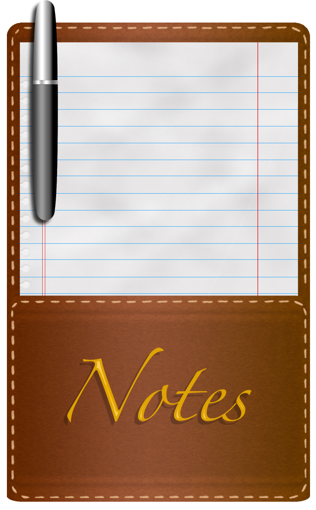

References / Illustration / 232
Leather notepad illustration, 2013
A Photoshop drawing of a stitched leather notepad with ruled paper and a pen, made to illustrate skeuomorphism.
- Source
- Wikimedia Commons: Leather Notepad.png
- Creator
- TTerlizz (Wikimedia Commons user)
- Made
- 2013 (upload date 7 August 2013)
- Style
- Skeuomorphism (demonstration; agent-proposed, not yet reviewed by a person)
- Moods
- Tactile, warm, crafted
- Evidence
- Inspected the full 687 × 1108 px original from Wikimedia Commons. It is an amateur demonstration, not a shipped interface.
- Reviewed
- Rights
- Open license, stored. License: CC-BY-SA-3.0. Rights policy

Context
The Commons description: “This is a leather notepad created in photoshop. It includes a pen, paper, and gold embroidery. This is a classic example of skeuomorphism: making a simulation of a real life object.” Wikimedia Commons.
Observed
- A brown leather cover with a fine grain and a lighter dashed stitch line inset from the edges and along a pocket seam.
- A sheet of white paper with pale blue horizontal rules, a red margin rule on each side, and punched holes along the left edge.
- A silver and dark gray pen with strong highlights lies over the paper and casts a shadow.
- The word “Notes” in gold italic script with a dark drop shadow sits on the leather pocket.
Why it belongs
The image repeats the iOS and Lion notepad vocabulary (see Notes) without any interface controls, so its measurements show material color and texture alone.
Borrow
Mark a panel edge with a dashed stitch line 6 to 10 px inside the border, in a lighter tone of the leather.
Use a red margin rule and pale blue rules for a note surface.
Measured
Machine-extracted by tools/image-traits.py on . Full measurement.
- Mean chroma
- 0.19
- Palette
- #e2e0e1 34%
- #683803 17%
- #8b4d2d 15%
- #ffffff 9%
- #7b411a 8%
- #995832 3%
- #efeeee 2%
- #c5daea 2%

